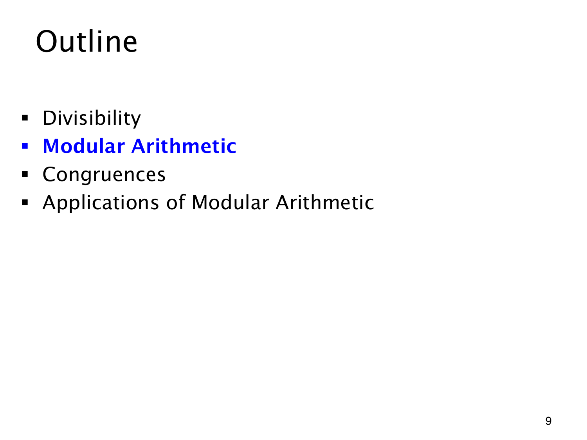

L1.12 · 第 9 页讲解原文
查看这一页课件

从余数为零，到所有余数
整除关心余数是否为零。进入模运算后，其余可能的余数也要保留下来：给定正整数 m，每个整数除以 m 都有唯一的余数，落在
0,1,…,m−1.
无限多个整数因此能按这有限的 m 种余数分类。被除数即使是负数，也沿用同一个非负余数范围。
目录中蓝色的 Modular Arithmetic 标出新的起点，前面的 Divisibility 已经讲完。接着的 Congruences 会把“两个整数余数相同”写成数学关系，再由 Applications 使用这些关系。